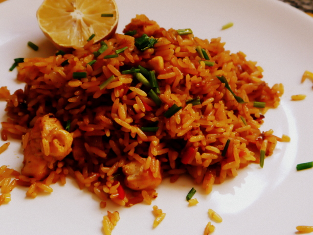

PASTEL DEL PAPAS

INGREDIENTES:
1kg. de papas
1/2kg. de carne picada de ternera
1 cebolla
1/2 pimiento morrón
2 dientes de ajo
1 cubito de caldo
pimentón a gusto
25g. de manteca
1 chorrito de leche
nuez moscada
aceite
sal
pimienta
PROCEDIMIENTO:
1. Cortar las papas en cubos y ponerlas a hervir con sal.
2. Picar la cebolla, el ajo y el pimiento morrón.
3. Calentar el aceite en una olla o sartén y sofreir la cebolla, el pimiento y los ajos.
4. Cuando la cebolla está transparente, agregar la carne y sofreirla mientras se deshace con una cuchara.
5. Salpimentar, agregar la pastilla de caldo, el ajo en polvo, el pimentón y cocer la carne 15min.
6. Una vez que las patatas estén hervidas, hacer en caliente un puré con la manteca y la leche. Salpimentar.
7. Poner en una fuente para horno una base de puré, agregar por encima la carne (dejar que se entibie un poco) y colocar otra capa de puré.
Para distribuirlo, se moja la cuchara con agua fría.
8. Llevar a horno fuerte o gratinador unos 15-20 min. o hasta que la parte de arriba esté crocante.
Puede agregarse al relleno de carne un huevo picado, olivas verdes picadas o pasas de uva.
ARROZ CON POLLO
- 
INGREDIENTES 1 cebolla
1/2 pimiento morrón
1 diente de ajo
1 pechuga de pollo
1 tomate
1 taza de arroz
1 caldito de ave o verduras (ver cómo hacer calditos de verdura caseros)
1 chorro de aceto balsámico (se puede reemplazar por vino blanco)
Condimento para arroz
Ciboulette picado (para decorar)
Sal, pimienta y aceite
PROCEDIMIENTO:
1. Trocear el pollo en pedazos pequeños y saltearlo en la sartén caliente (con un chorrito de aceite) hasta que esté dorado de ambas partes.
Retirar y reservar.
2. Saltear en el fondo de cocción del pollo la cebolla, el morrón y el ajo, todo picado pequeño.
3. Cuando la cebolla esté transparente, incorporar el tomate, también picado.
Sofreír hasta que tome un color amarronado.
4. Incorporar los trozos de pollo que habíamos reservado.
Agregar el arroz y remover, salteando a fuego medio, hasta que los granos de arroz se vean transparentes.
5. Agregar el doble de agua (2 tazas), salpimentar y condimentar. Agregar también el chorro de aceto o vino.
Revolver una sola vez y dejar que hierva. Cuando hirvió, bajar el fuego a medio y cocinar destapado, hasta que el arroz haya consumido toda el agua.
No revolver durante la cocción.
6. Servir y llover con ciboulette picado. Se puede comer con limón.
GUISO DE LENTEJAS

INGREDIENTES:
1 chorizo colorado
150 g de panceta ahumada
250 g de roast beef u otra carne
1 cebolla grande
2 dientes de ajo
1/2 morrón
1 papa grande
1 zanahoria
2 tomates
4 tomates secos
350 g de lentejas
1/2 vaso de puré de tomate
Sal
Pimienta
Ajo en polvo
Pimentón
2 hojas de laurel
Orégano
Aceite de oliva
Perejil
PROCEDIMIENTO:
Lo primero que vamos a hacer es cortar el chorizo colorado en rodajas, y luego cada rodaja en cuatro partes.
Ponemos los trozos de chorizo en una olla con agua y lo llevamos a hervir durante 15 minutos: éste procedimiento va a generar que el chorizo se desgrase y evitaremos que el guiso quede con mucho aceite o gusto a chorizo.
Cortar la panceta en pedacitos pequeños.
Esto es a gusto de cada uno, pero a mi me gusta la panceta en trozos chicos. La carne vamos a cortarla en cubos un poco más grandes (también a gusto del consumidor, yo les cuento cómo me gusta a mi). Reservar.
Picar la cebolla y el ajo finamente.
El morrón también debemos picarlo pero no es necesario que esté tan pequeño. Seguimos con las papas y las zanahorias, que las pelamos y las cortamos en cubos y en rodajas respectivamente.
Picar los tomates y los tomates secos sin hidratar. Si no tenes tomates secos no importa, le dan mucho sabor pero podes obviarlos.
Ahora vamos con la cocción: lo primero que hacemos es colocar en una olla antiadherente y a fuego fuerte los trocitos de panceta. No los vamos a tocar hasta que comiencen a hacer ruido de cocción. En ese momento vamos a revolver despacio y de vez en cuando: la idea es que la panceta nos quede bien crocante y que no quede hervida, clave del guiso de lentejas.
Cuando la panceta está tostada le agregamos el chorizo colorado previamente escurrido.
Cocinar a fuego fuerte hasta que el chorizo también esté dorado. Cuando esté todo bien tostado vamos a retirarlo de la olla y sin limpiarla (ya que queremos tener el fondo de cocción de la panceta y el chorizo) seguimos con el próximo paso.
El trozo de panceta que utilicé estaba practicamente sin grasa, y por eso yo agregué un chorrito de aceite de oliva en la olla. En la mayoría de los casos van a ver que la olla ya contiene la grasa que desprendió la panceta, por lo tanto no le agregan nada.
Añadir la carne y dorar de la misma forma que doramos la panceta: no la tocamos hasta que empiece a dorase por un lado, luego la movemos un poquito y vamos procurando que se dore por todos sus lados. Retirar la carne y nuevamente dejar el fondo de cocción para que ese sabor sea aprovechado en el resto del guiso de lentejas.
Agregar la cebolla, el morrón y el ajo. Añadí un poquito de sal para que las verduras larguen su agua y queden bien tiernas. Cocinar hasta que la cebolla esté transparente.
Sumar el tomate a la olla y cociná hasta hasta que éste cambie de color a un rojo más intenso, aproximadamente 3 minutos sin dejar de revolver.
Añadir todas las carnes (chorizo, panceta, y roast beef) y también un chorro de vino. Esperar a que se evapore el vino: para ésto podemos guiarnos por el olor, cuando deja de tener olor a alcohol quiere decir que ya se evaporó. Si no tenés olfato, aproximadamente son 3 minutos.
Agregar las papas, las zanahorias y los tomates secos mientras revolvemos. Condimentamos con sal, pimienta, ajo en polvo, pimentón, y una pizca de orégano. Por último añadimos un vasito de puré de tomates. No escatimen en los condimentos, recuerden que van a salir varias porciones! Un guiso de lentejas sin condimentar es insulso.
Ahora vamos a completar con las lentejas y con el agua calentita. Es el momento de agregar el laurel y revolver. Tapar la olla y dejar que se cocine a fuego medio, cada tanto abrir la olla y revolver.
Siempre tiene que estar cubierto de agua al ras de las lentejas, procurando que el agua siempre este caliente antes de añadirla.
Una vez que estén las lentejas cocidas esperamos que se termine de evaporar el agua y lo dejamos reposar. Este último tip es super importante: si dejamos reposar unas horas el guiso va a obtener más sabor y quedará mucho más sabroso!